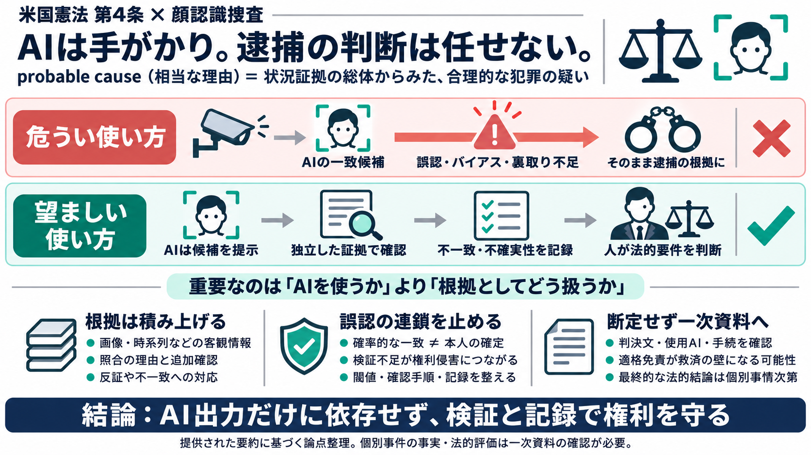

Facial Recognition and the Fourth Amendment
c. Negligent Error The doctrines of reasonable suspicion and probable cause forgive error at high rates. But even those …

c. Negligent Error The doctrines of reasonable suspicion and probable cause forgive error at high rates. But even those …
In the Vermont case, Clearview AI invoked Section 230 immunity. The court denied the use of Section 230 immunity in this…
Officials then used a photo from a fraudulent ID card presented by the suspect, rather than surveillance footage, to con…
rate was 40%, and its studies have also shown false identification rates for Asian or Black people to be as much as 100 …
investigations, and protective security missions. DOJ wrote to the Commission that FRT is used solely to generate lead…